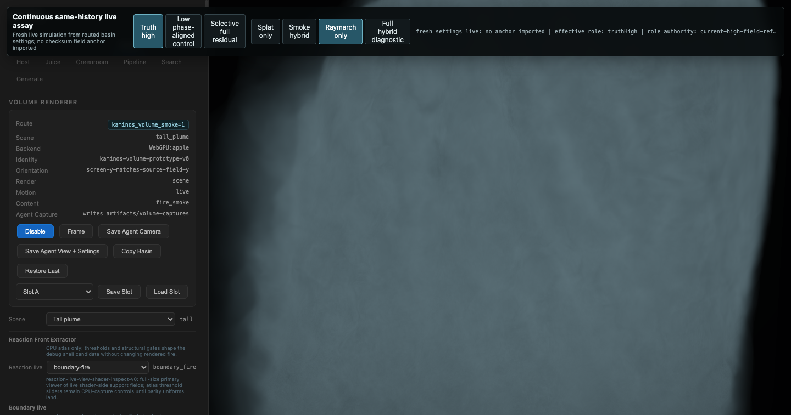

Local page for the same-basin raymarch-only probe requested on 2026-07-16.
The route requested volume_smoke=0, composition=raymarch-only-v0,
role=truthHigh, volume_steps=160, and volume_render_scale=1.
Important receipt caveat: the effective composition stayed raymarch-only-v0
with no fallback, but its raymarch authority is
diagnostic-raymarch-selected-fields-fire-smoke-v0, not a fire-only/smoke-suppressed authority.
Visually the frame still carries a broad blue-gray volume, so this is a diagnostic smoke-slider-zero probe,
not evidence that Kaminos currently exposes a clean same-settings no-smoke raymarch route.

volume_smoke=0; captured by volume-selective-head-live-witness.mjs
after 48 render/simulation steps.
/private/tmp/kaminos-pyro-gaussian-footprint-kneecapper-0716/artifacts/pyro-gaussian-footprint-kneecapper-0716/no-smoke-raymarch-probe/raymarch-only-smoke0-frame.png